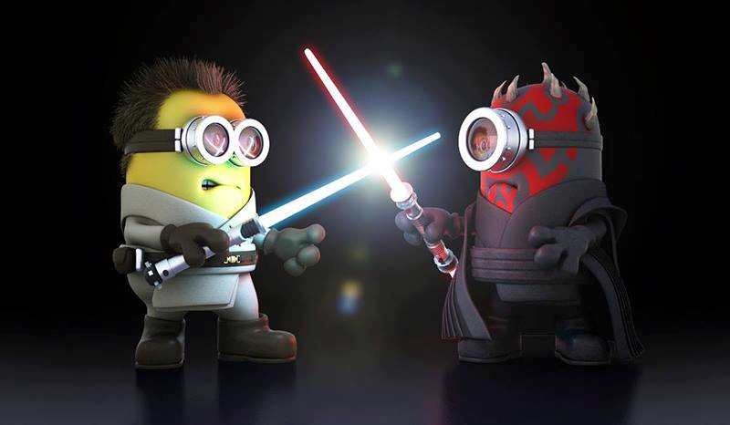

Силата
Силата е всемогъщата способност на всеки джедай. Използването на Силата изисква познание в много
различни сфери. В джедайството, Силата е способността да се сътворява. Похватите на Силата се
категоризират в различни стилове. Сред тях са: обектно-ориентирано, императивно, функционално и
декларативно.
Тя може да бъде разгледана още от две страни, като Тъмна и Светла. Съвсем малка част дели
Тъмната страна от Доброто и много лесно човек може да премине към Злото. Към тъмната страна
могат да те привлекат гневът, завистта и алчността, но джедаите използващи Светлата страна,
опазват равновесието в Света и в междугалактическите отношения.
Учебен план
Учебният план на СтарУни е изцяло насочен към усвояването на фундаментални познания, развиващи
умения за владеене на Силата, както и придобиването на практически умения със светлинен меч.
За ученици в Ордена се приемат тези, които усещат Силата. По време на това подготвително ниво те
придобиват познания и умения необходими за успешното преминаване на приемния изпит в
университета. След като преминат успешно курса по основи на Силата те могат да продължат
обучението си като Падуани.
Падуаните са ученици започнали сериозно обучение под ръководството на рицар- джедай или майстор-
джедай. Те преминават през обучения с висока интензивност и тежки изпитания като: побитови
операции, флексбокс, дебъгинг и много други. Падауанът трябва да докаже, че е достатъчно обучен,
показвайки практическо знание за Силата в мъчителни шестчасови изпити. Не на последно място е
конструирането на собствен лазерен меч, медитирайки със Силата.
След този период, падуаните имат възможност да участват в избрани от тях специализирани курсове,
в допълнение към курсовете от предходните нива, с цел да придобият допълнителни, по-задълбочени
познания и да се превърнат в рицари-джедаи.
Джедаите
Джедаите преминават многогодишно обучение. Те използват добрата страна на Силата след
опознаване на специалните техники. Нямат свой собствен живот, а по-голямата част от тях са се
лишили и от възможността да имат свое семейство. Отдадени са изцяло на каузата. Има няколко
степени на обучение. Наков е един от малкото джедаи, който е достигнал най-високото ниво на
посвещение.
